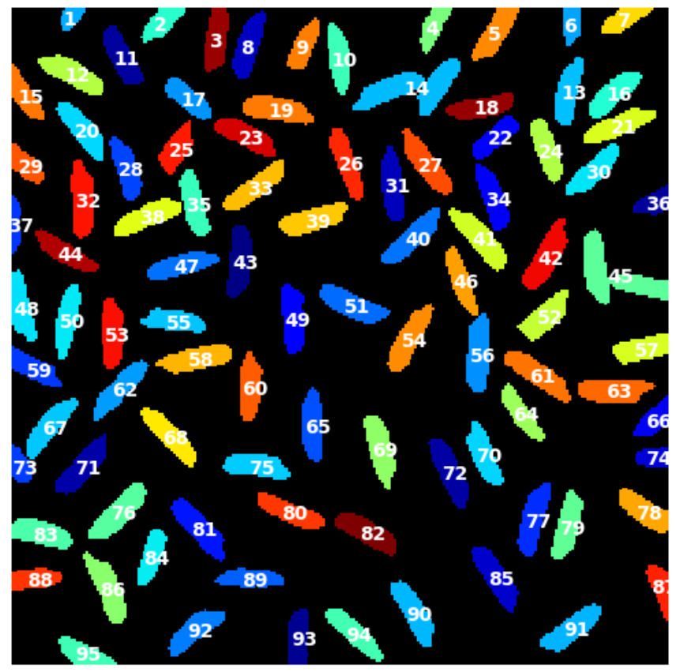
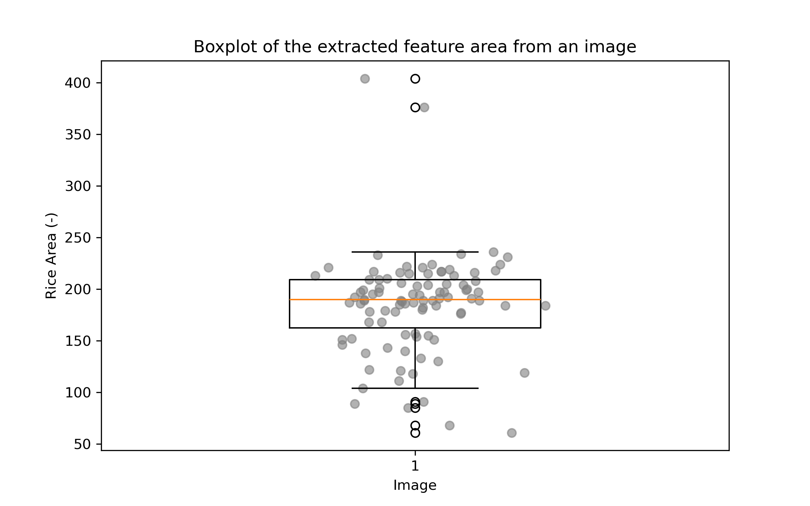
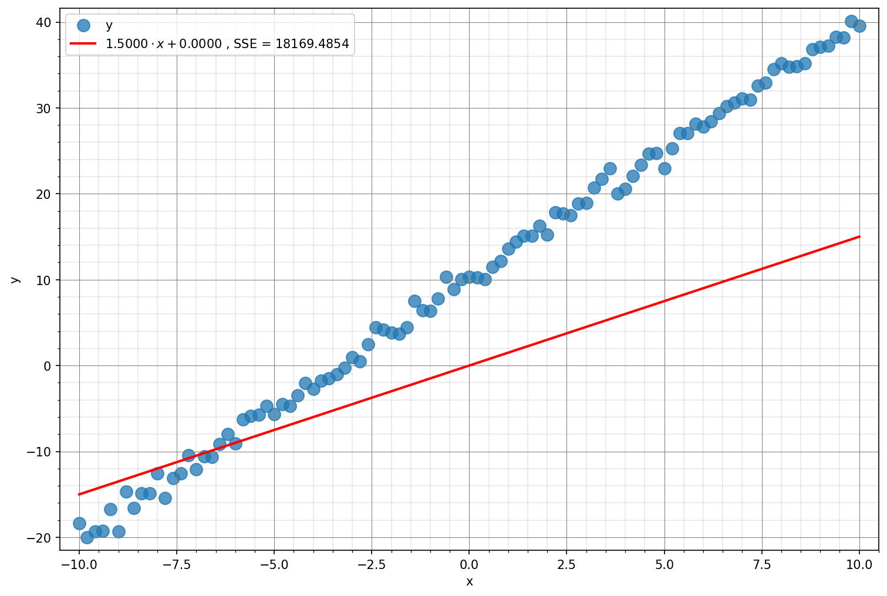
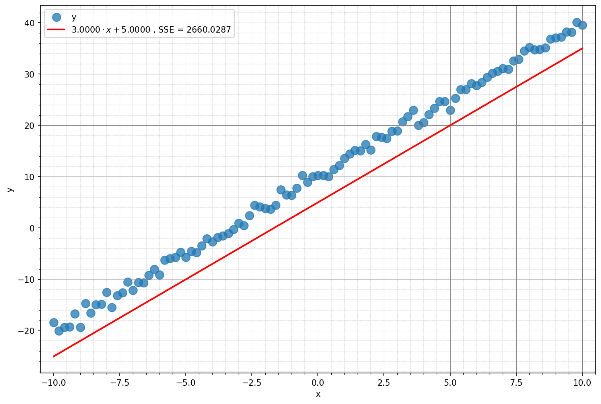
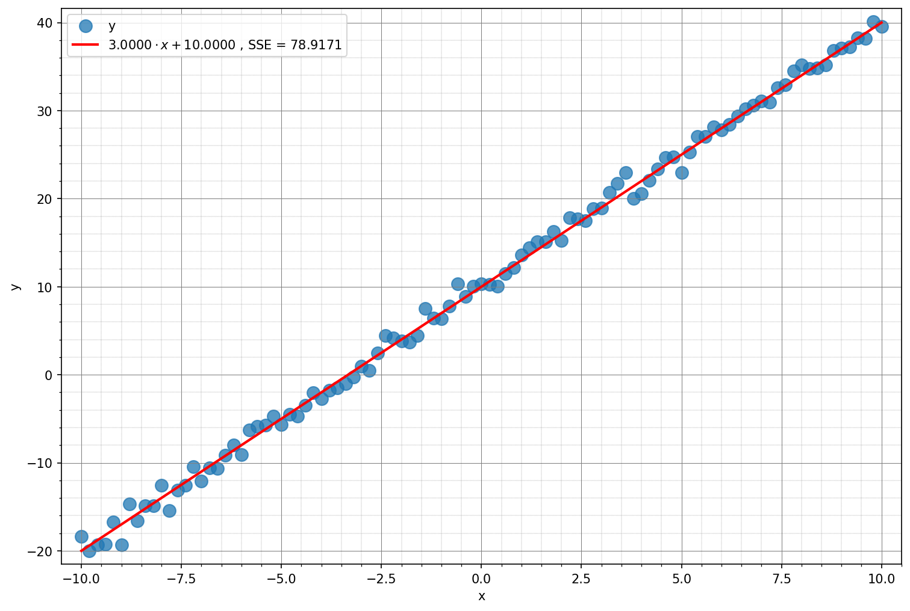
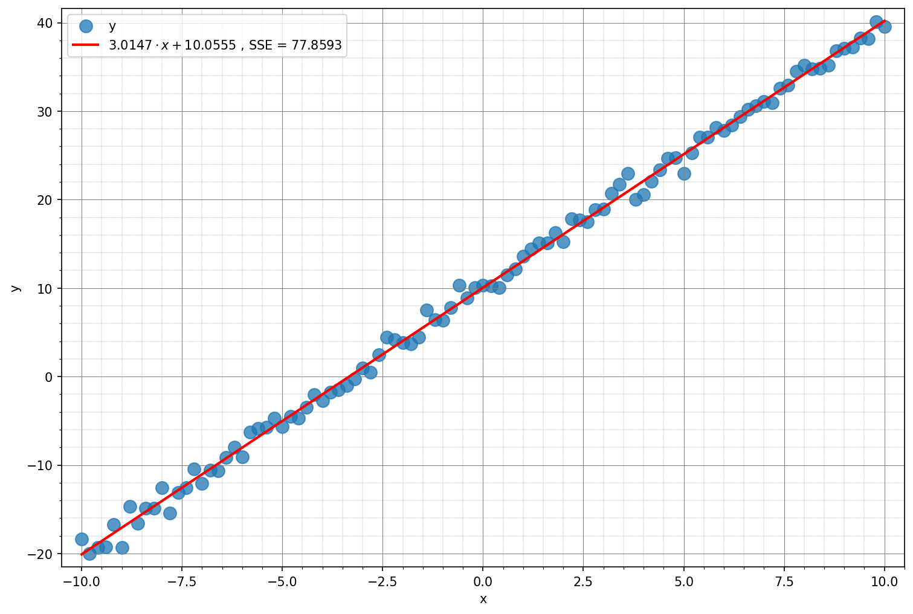
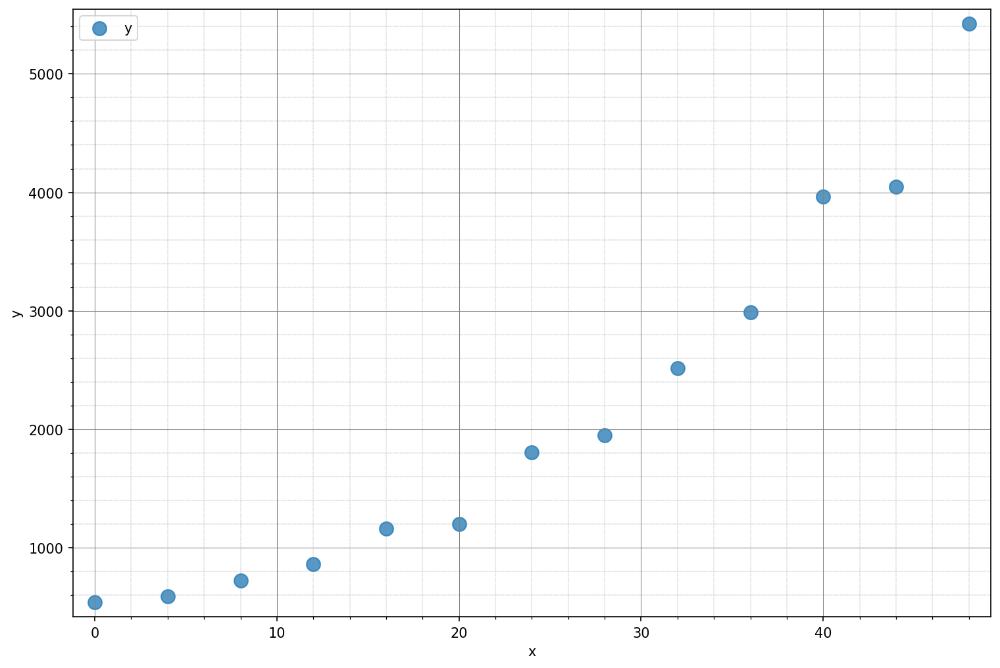
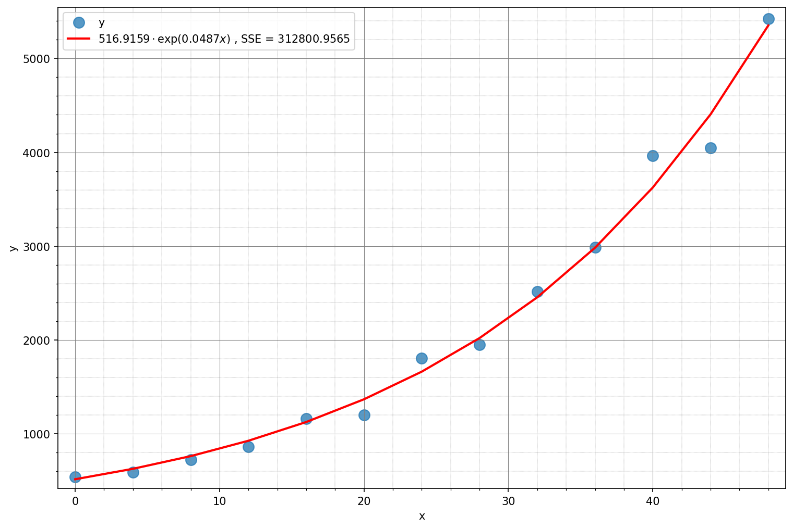

5. Feature Extraction and Plotting#
This section covers extracting quantitative features from images and visualizing results to support analysis.
Extracting the area of rice from an image#
Lets suppose we want to find the average size of rice. As a proxy we could use the area individual rice grains cover on an image in pixel units. If we knew the pixel size we could in principle convert this area to actual SI units.
We first load an image
I = imread("illustrations/rice_clean.tif")
Then we need to detect the rice grains. For this we can use thresholding as learned previously. Additionally we clean the binary image and obtain a labeled mask.
threshold = threshold_otsu(I)
bw = I > threshold
bw = area_opening(bw, area_threshold=50)
labels, num = label(bw, background=0, return_num=True, connectivity=1)
show_labels(labels, plot_labels = True)
{kind=link}

Next we use regionprops that estimates all kind of features from a labeled mask and directly obtain the area for each object. Then we create a dict with all the quantified areas.
props = regionprops(labels)
areas = []
for prop in props:
areas.append(prop.area)
dd = {'area': np.array(areas)}
We then convert the dict for ease of use to a pd.DataFrame and save it to disk for future use and directly load our dataset again. Note: we could also use directly our dataframe df.
df = pd.DataFrame(dd)
csv_filename = 'rice_data.csv'
df.to_csv(csv_filename, index=False)
df_loaded = pd.read_csv(csv_filename)
We then use the package matplotlib to plot the results. We choose boxplot with scatter to directly get a statistical summary of the area’s distribution and see the actual data as grey dots.
plt.figure(figsize=(8, 5))
box = plt.boxplot(df_loaded,
widths=0.4,
patch_artist=False)
plt.xlabel("Image")
plt.ylabel("Rice Area (-)")
plt.title("Boxplot of the extracted feature area from an image")
for i, dose in enumerate(df_loaded):
y = df_loaded
x = np.random.normal(i+1, 0.08, size=len(y))
plt.scatter(x, y, color='grey', alpha=0.6)
plt.savefig('rice_feature.png', dpi=300)
plt.show()
print(f'The average rice grain area is {round(np.nanmean(df_loaded), 2)} \u00B1 {round(np.nanstd(df_loaded), 2)}.')
The average rice grain area is 185.06 ± 48.66.
{kind=link}

Introduction to regression (curve fitting)#
Some intuitions round the topic of curve fitting.
Please note: we will mostly discuss examples of curve fitting without entering the much more extensive field of regression analysis, that is well beyond the scope of this course. However this part will be useful for solving your exercise.
Noisy linear data#
We have some noisy linear data and we want to fit a linear model to it. The idea is that some linear process is generating the data that we acquired or measured in some way. Because of some noise in the measurement process or some intrinsic variability in what we have measured, our measurement points will not fall exacly on a line.
The model we want to fit is y = ax + b + e, where x and y are our data, and a and b are the parameters of our model that we want to estimate.
In particular:
The parameter
ais the slope of the line.The parameter
bis the intercept of the line (i.e. the value ofyforx = 0).The term
eaccounts for deviations between the linear model and the (noisy) data. If the data is a perfect line with no noise at all,aandbwill fit the data perfectly with no deviation, andewill be zero. In general, the goal of model fitting is to find the curve that passes as close to all(x, y)pairs as possible thus minimizing the value of the residuale.
We will try to estimate the values of a and b in a series of attempts of increasing complexity. We will create the data to be fit by specifying several arguments as explained below.
# Fix the seed of the random number generator
rng = np.random.RandomState(1)
# Our demo raw data
x = np.linspace(start=-10.0, stop=10.0, num=101)
y = 3 * x + 10 + 1.0 * rng.randn(len(x))
We will use the plot_data() function quite a bit. Let’s have a look at how we can use it (?plot_data).
# Plot the data
_ = plot_data(x, y)
Naïve fits#
In the following, we will use the model function y = a * x + b, where a is the slope of the line and b is its intercept. We can define it as:
def linear_model(x, a, b):
"""Our linear model y = a * x + b."""
y_hat = a * x + b
return y_hat
We will be using it everywhere we need to calculate the values of the data points y from x and the (current) values of the slope a and the intercept b.
One way to assess how good a fit is to the underlying data, is to calculate the total distance of the predicted values from the original ones. One common way of doing this is by calculating the sum
of the squared differences between the data points y and the predicted values y_hat.
For this, we will define and use the function:
def calc_sse(y, y_hat):
"""Calculate the Sum of Squared Errors between prediction y_hat and data y."""
sse = np.sum(np.power(y_hat - y, 2))
return sse
First naïve fit#
We manually “Fit” a line with a random guess of a slope a = 1.5 and intercept b = 0.
a = 1.5
b = 0.0
Our model function is y = a * x + b, where a is the slope and b is the intercept of the line.
y_hat = linear_model(x, a, b)
y_hat
array([-15. , -14.7, -14.4, -14.1, -13.8, -13.5, -13.2, -12.9, -12.6,
-12.3, -12. , -11.7, -11.4, -11.1, -10.8, -10.5, -10.2, -9.9,
-9.6, -9.3, -9. , -8.7, -8.4, -8.1, -7.8, -7.5, -7.2,
-6.9, -6.6, -6.3, -6. , -5.7, -5.4, -5.1, -4.8, -4.5,
-4.2, -3.9, -3.6, -3.3, -3. , -2.7, -2.4, -2.1, -1.8,
-1.5, -1.2, -0.9, -0.6, -0.3, 0. , 0.3, 0.6, 0.9,
1.2, 1.5, 1.8, 2.1, 2.4, 2.7, 3. , 3.3, 3.6,
3.9, 4.2, 4.5, 4.8, 5.1, 5.4, 5.7, 6. , 6.3,
6.6, 6.9, 7.2, 7.5, 7.8, 8.1, 8.4, 8.7, 9. ,
9.3, 9.6, 9.9, 10.2, 10.5, 10.8, 11.1, 11.4, 11.7,
12. , 12.3, 12.6, 12.9, 13.2, 13.5, 13.8, 14.1, 14.4,
14.7, 15. ])
We can now calculate the SSE:
sse = calc_sse(y, y_hat)
sse
18169.485449511147
Now plot the predicted y_hat and display a summary of the fit.
_ = plot_data(x, y, y_hat=y_hat, a=a, b=b, sse=sse)
{kind=link}

Second naïve fit#
We manually “Fit” a line with a random guess of a slope a = 3 and intercept b = 5.
a = 3.0
b = 5.0
Calculate y_hat with the new parameters.
y_hat = linear_model(x, a, b)
Calculate the SSE.
sse = calc_sse(y, y_hat)
sse
2660.028670866315
Again, plot the predicted y_hat and display a summary of the fit.
_ = plot_data(x, y, y_hat=y_hat, a=a, b=b, sse=sse, lim_y=(None, None))
{kind=link}

We can observe that the SSE got smaller indicating that the model fits the data better and explains a greater portion of the variance.
Third naïve fit#
We manually “Fit” a line with a random guess of a slope a = 3 and intercept b = 10.
a = 3.0
b = 10
Calculate y_hat with the new parameters.
y_hat = linear_model(x, a, b)
Calculate the SSE.
sse = calc_sse(y, y_hat)
sse
78.91710443847684
For the last time, plot the predicted y_hat and display a summary of the fit.
_ = plot_data(x, y, y_hat=y_hat, a=a, b=b, sse=sse)
{kind=link}

Search for the optimal fit#
Instead of guessing, we want to search for the line (i.e. the parameters a and b) that gives us the smallest possible SSE (sum of squared errors) between each value y[i] in the data and the predicted one y_hat[i]. This proper search of the minimum of SSE requires more advanced optimization techniques.
The SciPy library provides the function fmin in their optimize package, that uses numerical analysis techniques to find the minimum of multi-parameter functions.
We try to find the parameters a_best and b_best that plugged into our linear model ax + b result in a predicted value y_hat that minimizes the error from the real data y (i.e., the SSE). So, the function to minimize is calc_sse(), with the constraint that internally we need to keep recalculating the value of y_hat to update the current value of SSE (that should be minimal).
We can define our objective function to minimize objf that takes a tuple of parameters (a, b) that are the ones that are optimized, and additional argument x, and y that we need to calculate the SSE but that are not modified by scipy.optimize.fmin().
def calc_sse(y, y_hat):
"""Calculate the Sum of Squared Errors between prediction y_hat and data y."""
sse = np.sum(np.power(y_hat - y, 2))
return sse
def linear_model(x, a, b):
"""Our linear model y = a * x + b."""
y_hat = a * x + b
return y_hat
def objf(params, x, y):
"""Our objective function."""
a = params[0]
b = params[1]
y_hat = linear_model(x, a, b)
sse = calc_sse(y, y_hat)
return sse
Now we can plug objf into the scipy.optimize.min() function and find the values for a and b that minimize the SSE.
# Starting values for the optimization (initial values for a and b)
starting_values = (0.0, 0.0)
# Run the optimization
res = optimize.fmin(objf, starting_values, args=(x, y))
Optimization terminated successfully.
Current function value: 77.859336
Iterations: 87
Function evaluations: 164
Let’s have a look at the results:
a_est = res[0]
b_est = res[1]
print(f"Real values: (slope = {a_real:.4f}, intercept = {b_real:.4f}), estimated parameters: (slope = {a_est:.4f}, intercept = {b_est:.4f}).")
Real values: (slope = 3.0000, intercept = 10.0000), estimated parameters: (slope = 3.0147, intercept = 10.0555).
We can calculate y_hat and sse using the pobtained parameters.
y_hat = linear_model(x, a_est, b_est)
sse = calc_sse(y, y_hat)
Let’s plot the results.
_ = plot_data(x, y, y_hat=y_hat, a=a_est, b=b_est, sse=sse)
{kind=link}

The value of SSE for the optimal solution (77.85933573338627) is slightly lower than the value from our naïve fits (78.91710443847684) but overall the best solution for this model.
Other model types#
The model we want to fit this time is y = a * exp(b * x) + e, where x and y are given and a and b are the parameters of our model that we want to estimate. The term e accounts for deviations between the model and the noisy data.
These are the parameters for this part of the demo. We want to study cell proliferation, and we assume we measured cell counts (or biomass) at regulat intervals of 4 hours for 48 hours. An accepted model of cell proliferation is as simple exponential of the form: \(M(t)=M(0)e^{\lambda t}\)
To simulate some data we use:
M0 = 500
lm = 0.05
noise = 0.05
With M0 being the initial cell count (or biomass) at time zero, i.e., the starting population size before any growth occurs. lm the exponential growth rate constant, representing how fast the cell population grows over time. noise: a fractional noise level that simulates experimental variability or measurement error, added as Gaussian noise relative to the cell count. For the sake of consistency in our notation, we will keep calling the independent variable x (representing time t in the previous equation), and the dependent variable y (indicating the number of cells M).
rng = np.random.RandomState(1)
x = np.linspace(start=0, stop=48, num=13)
M = M0 * np.exp(lm * x)
y = np.round(M + (noise * M) * rng.randn(len(M)))
print(y)
[ 541. 592. 726. 862. 1161. 1203. 1805. 1950. 2516. 2987. 3965. 4048.
5423.]
Plot the data.
_ = plot_data(x, y)
{kind=link}

Fitting an exponential function#
Exponentials are often used when the rate of change of a quantity is proportional to the initial amount of the quantity.
We can use again the scipy.optimize.fmin() function. This time, instead of using a linear model ax + b, we use an exponential model a*exp(b*x).
def exponential_model(x, a, b):
"""Exponential model y_hat = a * exp(b * x)."""
y_hat = a * np.exp(b * x)
return y_hat
Let’s define again our objective function, this time using the exponential function instead of the linear model we used earlier.
def calc_sse(y, y_hat):
"""Calculate the Sum of Squared Errors between prediction y_hat and data y."""
sse = np.sum(np.power(y_hat - y, 2))
return sse
def objf(params, x, y):
"""Our objective function."""
a = params[0]
b = params[1]
y_hat = exponential_model(x, a, b)
sse = calc_sse(y_hat, y)
return sse
Since the points along the exponential curve increase as a function of x, we know that b must be larger than 0.
We set the initial values for out parameters to a = y[0] and b = 1.0.
# Starting values for the optimization (initial values for a and b)
starting_values =[y[0], 1.0]
# Run the optimization
res_exp = optimize.fmin(objf, starting_values, args=(x, y))
Optimization terminated successfully.
Current function value: 312800.956454
Iterations: 75
Function evaluations: 144
Let’s have a look at the results:
a_exp = res_exp[0]
b_exp = res_exp[1]
print(f"Estimated parameters: (a = {a_exp:.4f}, b = {b_exp:.4f}).")
Estimated parameters: (a = 516.9159, b = 0.0487).
Let’s calculate y_hat and sse.
y_hat = exponential_model(x, a_exp, b_exp)
sse = calc_sse(y, y_hat)
Let’s plot the data with the fitted curve.
_ = plot_data(x, y, y_hat=y_hat, a=a_exp, b=b_exp, sse=sse, model_for_legend="exp")
{kind=link}

An alternative way to fit a model#
The scipy.optimize package offers an alternative function that is a higher-level approach to model fitting: curve_fit(). This function still uses optimization behind the curtains but does most of the work for us.
Please notice, that it is important to have the independent value x as the first argument of the model to fit. This has been our convention all along (also for the optimization sections), so nothing changes for us.
def exponential_model(x, a, b):
"""Exponential model y_hat = a * exp(b * x)."""
y_hat = a * np.exp(b * x)
return y_hat
Let’s try fitting a curve to our y vector above. Please notice that curve_fit is very sensitive to the initial values of the parameters!
start = (y[0], 0.5)
popt, _ = optimize.curve_fit(exponential_model, x, y, p0 = start)
a = popt[0]
b = popt[1]
We can use the estimated parameters to calculate the predicted y_hat and the sse.
y_hat = exponential_model(x, popt[0], popt[1])
sse = calc_sse(y, y_hat)
Let’s plot and compare the results.
_ = plot_data(x, y, y_hat=y_hat, a=popt[0], b=popt[1], sse=sse, model_for_legend="exp")
We obtain the same fit as with out optimization from the previous section.